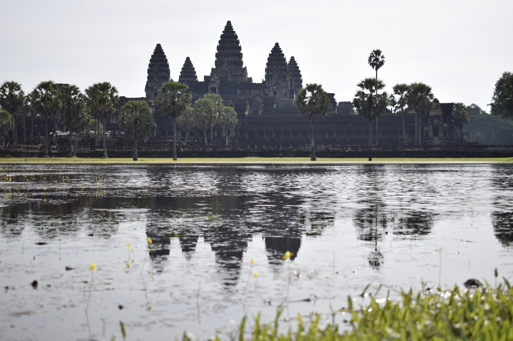
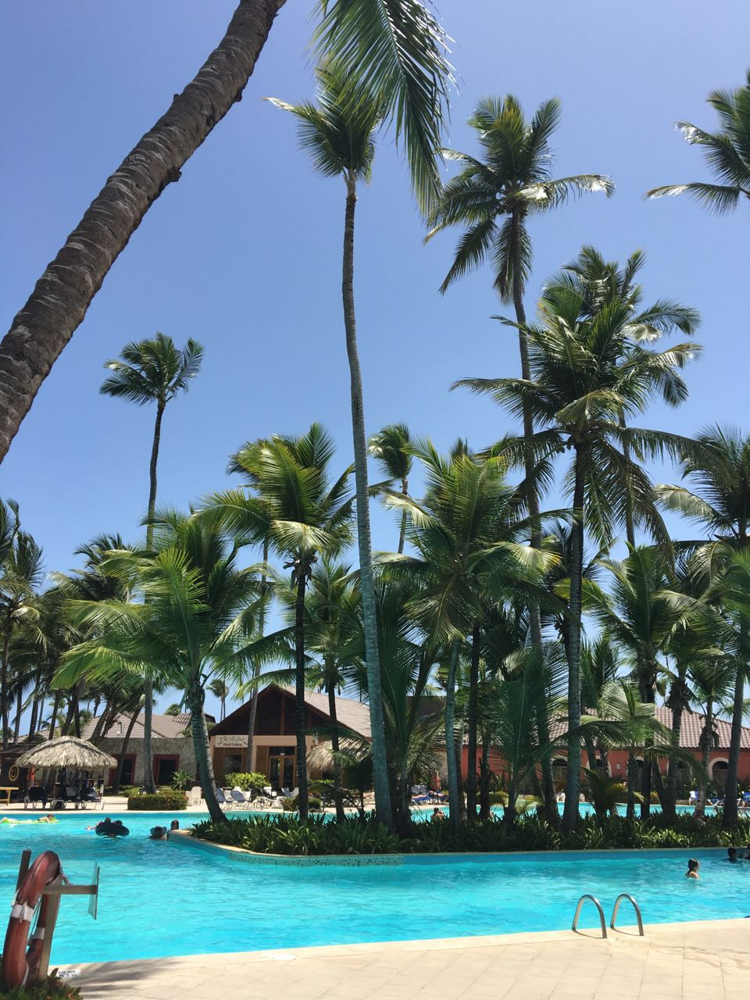
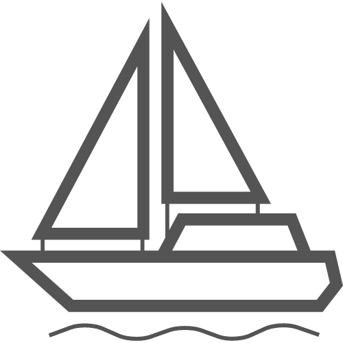
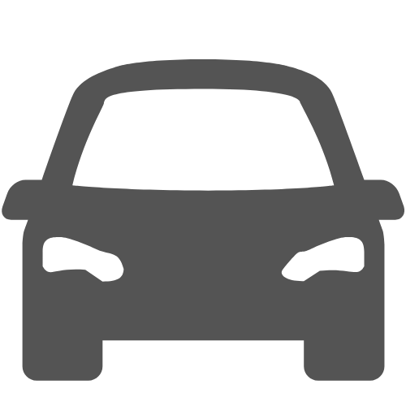

Podrás encontrar info sobre los itinerarios de viajes que he
realizado, la forma de llegar que he utilizado en cada uno,
fotografías sobre los lugares y un análisis sobre la cantidad de
tiempo invertida en cada uno de ellos
Naturaleza
¿Te imaginas caminando por la inmensidad de un glaciar? O
simplemente observar desde un barco o un terreno firme
cercano..

Ciudades
¿Alguna vez pensaste que podías pisar esos templos que
tantas fotos o documentales viste? Ciudades que tienen tanto
para contar...

Descanso
Quizás, simplemente quieras descansar y relajarte en aguas
termales en un entorno natural y tranquilo, sin preocuparte
por nada..
Maneras de viajar

Viaje en barco
Las opciones para viajes en barco pueden ser: Argentina en
Ferry (Colonia Express o Buquebus) o cruceros que van a
Argentina, Brasil o incluso a Europa

Viaje en auto o autobus
Para esta categoría son infinitas las opciones, desde viajes
cortos como recorrer Uruguay, o viajes internacionales a
Argentina, Brasil o Paraguay. También se pueden realizar viajes
más extensos.
Viaje en avión
El avión es el medio de transporte más habitual para los viajes
internacionales en los cuales las distancias recorridas para
llegar es muy larga